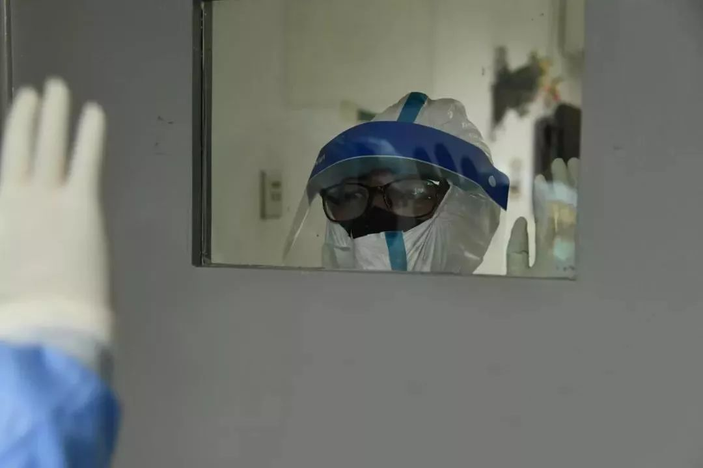
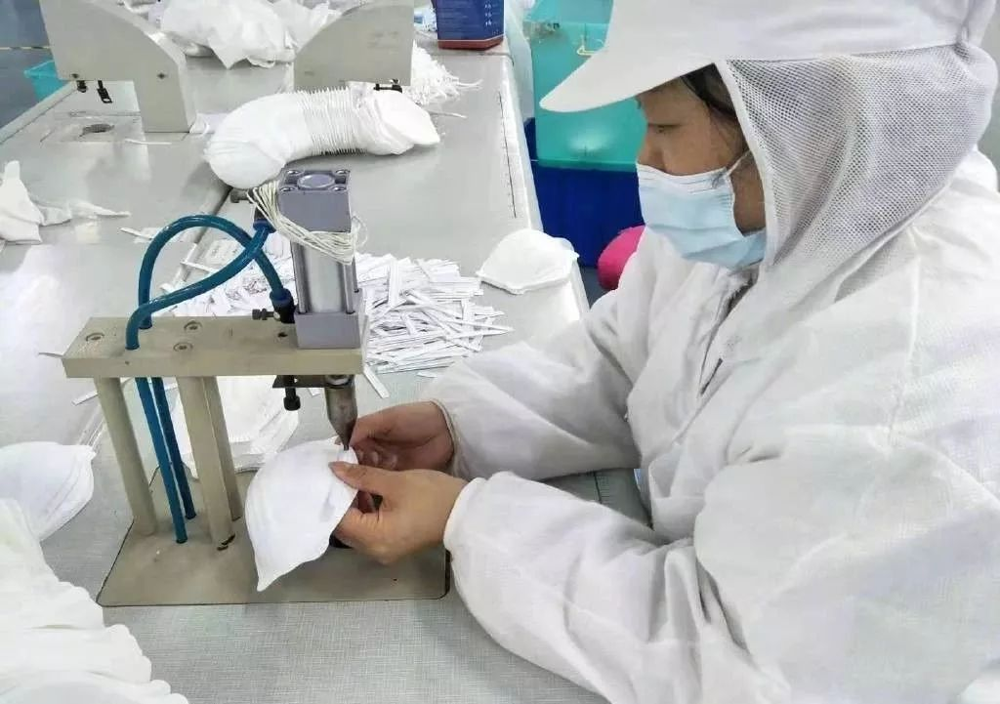
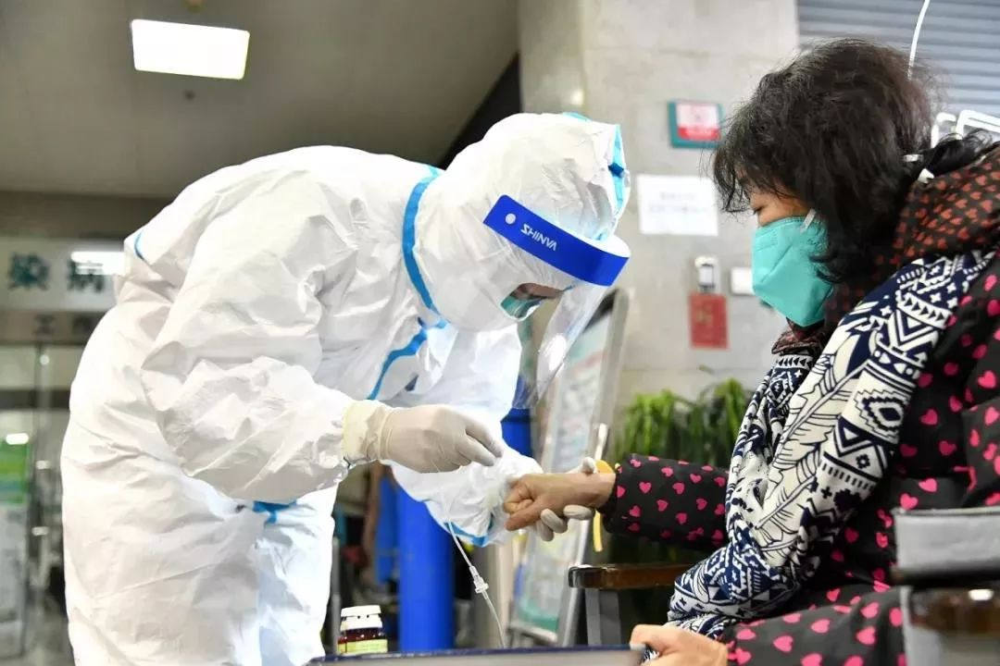

医护人员用文件袋自制护目镜——湖北县镇乡村防疫战
原文链接 备份链接 医疗防护资源不足是常态，各地资源调配需平衡，“灯下黑”区域渐次光亮，但少数地区的疫情宣传依旧不到位 外地务工返乡者最担忧的问题是年后经济收入断流、地域歧视，担心节后可能无法返工 本文首发于南方人物周刊 文 | 本刊记 …

《人物》记者向多位寻求捐赠的医护人员咨询，他们均表示，很多医院的医用外科口罩库存量大概在一个星期左右，「平常有时口罩也戴一天，如果不去视察病房，有的科室没有戴口罩的需求。」用得不多、存量少，脆弱的库存和供应系统很快被疫情冲垮，导致各地医院亮起红灯。
文 | 林秋铭 郑丹 俞禾 曹原
编辑 | 萧祷
口罩告急
「我们这儿什么都没有了，一天接了几百个问口罩的电话了。」北京金象大药房的员工翁芳在电话里告诉《人物》记者。她记得，临近年关的时候，肺炎的相关报道蔓延开来，随之来店里买口罩的人数剧增。
每天早上药店一开门，门口就聚集了一群等着买口罩的人。店里设置了限购的数额，N95的口罩一人限购3个，但库存一上架就会售空。售空后，其余顾客也不散去，眼巴巴地等着下一批货。除夕那天，翁芳还在库房里拉货，「都在那儿等着呢，全乱套了。」
口罩的价格也飙升，《人物》记者发现，去年12月份时购买30只N95口罩只需要138元，1月21日页面价格涨到了698元，仍旧卖断了货。口罩恶意涨价经由市场监管总局大面积查办后，得到了一定控制，但家中日益减少的口罩依然是稀缺品。
一夜之间，口罩成了硬通货，人们学会了如何快速辨认N95和普通医用口罩。戴着N95口罩出门，会引来旁人的询问：「你这口罩哪里买的？」各地的口罩数量吃紧，电商平台不断的补货仍不及公众的抢购速度，刚补足的货源秒秒售罄。
更急迫的是医用口罩的紧缺。
1月23日，湖北省中医院、华科大协和医院、湖北省儿童医疗中心、武汉大学中南医院、武汉市中心医院、武汉市中西医结合医院、武汉市第三医院、武汉大学人民医院等8家医院相继发出公告，向社会各界征集捐赠N95口罩、外科口罩、一次性医用口罩等防护物资。同时，武汉市周边的各县市开始在志愿组织的帮助下，自制求援的图片，向外求救。
湖北省恩施州巴东县人民医院的护士接受《人物》记者采访时称，物资在疫情前期就濒临殆尽，检验科和呼吸科只能用医用外科口罩。吃饭时摘下收好，饭后再继续戴上。N95的口罩只能让给身处一线的感染科，为了仅剩的物资，科室主任们发生了争执。医用外科口罩库存不足1000只，恐支撑不了2天。截至26日受访，该医院仍然没有接收到捐赠物资。
紧接着，湖北以外其他省市的医院也陆续发出公告。北京安贞医院、海南省三亚市人民医院、广州医科大学附属第一医院（钟南山团队所在医院）等都在各个平台上求助。

孝感市第一人民医院的公告，此前有网友提供信息称该院医生没有护目镜，用文件袋制作塑料隔板替代 图源微博@新浪湖北
河南南阳一家三甲医院的基层护士告诉《人物》记者，她所在的医院被划为冠状肺炎定点医院。每人每天只能领取到一个一次性医用口罩，按照规定，医护人员4小时必须更换一次，口罩告急后，只能硬撑12个小时，戴到湿软也舍不得脱下。1月26日开始，除感染科外，其他科室只允许领取到纯白色的棉纱口罩，只能阻挡部分粉尘，「这种口罩根本起不到防病毒的作用，但总聊胜于无。」不仅是医院亟需口罩，1月26日晚，中建三局三公司抢建火神山项目部通过湖北广播电视台电视经济频道向外呼吁捐赠，施工队需要大量N95口罩、雨衣、胶鞋等。
一篇关于医用防护口罩开发的论文指出，医用口罩的研发和疫情有密切关系。2003年的春天，对抗SARS的武器仍是普通的棉纱口罩，医用口罩标准尚未由国家标准所统一。据知情人士解释，在「全国标准信息公共服务平台」上查阅，2003年之前的口罩标准主要关注点皆为防粉尘。直到疫情的刺激下，同年4月29日，国家标准化管理委员会批准发布了GB19083-2003《医用防护口罩技术要求》。
那篇论文的最后，作者沈志明写上了自己对口罩事业未来的憧憬和担忧，「从2003年上半年SARS疫情的情况看，反映出了我国医疗机制上的一些问题，通过这次疫情也将会促进我国医疗机制的转变。尽管这个转变，因存在经济和认识上的局限将不会很快。」
17年后，口罩这一重要医疗资源的缺乏依然成为困境之一。中国作为世界最大的口罩生产和出口国，年产量占全球约50%。为什么口罩这一重要医疗资源会走向紧缺和供应不足？
生产维艰
新型冠状病毒性肺炎让我们看到了口罩生产的源头——生产口罩的厂商，它们在这个冬天突然吸聚了全国的目光。为了提高产能，各个工厂迅速召唤工人回厂作业，以3到5倍工资鼓励生产。以浙江省建德市朝美日化有限公司为例，该公司的120名工人留守或者返回生产线，被要求年初五之后，日产能必须达到5万只。
1月26日，工信部副部长王江平也坦陈，从目前武汉的需求来看，大部分物资供应能够满足需要，通过这段时间的努力，目前复工复产面达到了40%，但防护服、口罩等物资需求显得十分突出。
在这场疫情爆发以前，口罩厂的生存维艰很少获得关注。
由于口罩存在有效期，生产厂商不敢囤货。冬天一过，5月至8月的时节口罩的销量甚微，口罩厂的压力剧增，「工人你不能解雇吧，解雇之后到冬天你怎么办？要是给工人找活干，找活干他就给你做一大堆库存出来。」广东东莞的一家口罩生产厂的负责人谢阳说。口罩行业定价透明，很难有价格优势，口罩厂只能依靠薄利生存，工人的压力，还有房租、库存的压力，很多人顶不住，离开了这一行。
谢阳发现，这次对各个口罩厂的调动存在滞后。采购新设备、安装调试，至少需要一个月的时间，新厂的机器要到三月底或四月初才能启用。河南省长垣市医疗器械的从业人员李明忠早前接受媒体采访时提到，生产出的口罩要按规定放置14天，检验合格才能出厂，「这个流程时间是国家规定的，没法缩短。」
谢阳认为自己手里的这一批口罩「应该是合格了」，但如果需要送往医院，必须要拿到检测报告和医疗器械生产许可证等资质。「一个企业要办医疗器械的证，可能需要两三年，还不一定办得下来。」春节期间，资质无人可批，他只好将这一批口罩销往民间药房。
为了这场疫情，谢阳花了30万买了12台新机器，以4倍工资召回了10多位员工回厂，保持超负荷工作。
待疫情过后，口罩又将回归销售低迷的状态，口罩厂引进的新机器可能会大量过剩。届时如何处理闲置的机器，将是棘手的难题。「只能用来做口罩，你还能用来做什么呢？无菌车间，不可能做一些有污染的东西，到时候没办法清理。」他解释从商业的角度看，现在可以正常售卖，可「这一波之后，以后大家会更难」。

武汉一本已停工企业召回200多工人春节加班生产防护用品 图源人民日报微博
储备不足
「武汉不明肺炎刚出来的时候，我们业内就有注意了。但是当时正值年尾，一些报道让人觉得无足轻重。」林杰在一家商贸公司，负责医疗器械的采购工作。
1月20日下午，林杰关注到疫情相关新闻。出于从业习惯，他咨询了广州市各大药房，得知当地的连锁药房出于盈利目的，紧急向各个厂家购买现货，以满足社会群体购买需求。当晚，林杰所能联系到的口罩相关现货均被订走，口罩仓库基本被搬了个空。
各地单位尚没有反应过来时，由于了解口罩等医疗产品的业内存量，也预见到疫情的后续，敏感的林杰马上联系了广州当地的卫健委。受当地卫健委的委托，他在浙江朝美公司订购了18万个N95口罩，分别预供应给各个单位。两天以后，厂家告诉林杰，他们收到有关部门的征调令，所有货源优先供给武汉，货量大概在80万个。
「作为业内人士，我认为每个环节都有问题，无论是厂商、供应商、相关单位、药房、医院、群众，都存在对疫情的松懈。」大学时，林杰曾在卫计局（现卫健局）实习，后来借调在药监局参与工作。当时，他极少听说单位有对防疫的演练，「防火防震防洪都有，但大众防疫意识很薄弱。」林杰发现，医用护理产品很受轻视，从一般消费者到医护人员，基本无应急保障准备。此次疫情以前，极少有人关注口罩的分级分类。
孝感市第一人民医院医用耗材科的冯主任告诉《人物》记者，医院对N95口罩、防护服等储备长年不足。平日里，他们按照一定数额领取口罩，但这个数量只是保障医护人员自己使用，「之前的口罩只能由上级单位分配，不能由供应商单独给医院。当时只进货医用外科口罩，没有任何N95的储备。」
《人物》记者向多位寻求捐赠的医护人员咨询，他们均表示，很多医院的医用外科口罩库存量大概在一个星期左右，「平常有时口罩也戴一天，如果不去视察病房，有的科室没有戴口罩的需求。」用得不多、存量少，脆弱的库存和供应系统很快被疫情冲垮，导致各地医院亮起红灯。

医护人员在救治过程中必须有包括口罩、护目镜、防护服等完备的防护措施才能有效保护自己 图源武汉协和医院微信公众号
抵达困难
工信部近日发布消息称，我国口罩最大产能可以达到每天2000多万只。通过协调采购，将为武汉落实各类口罩300万个。
其他力量也在补充进来。接到湖北各个医院发出的求援信号，许多志愿者组织开始协调不同厂商和物流，实施了一场民间自救。
只是捐赠的口罩，在抵达医护人员手上之前，仍要历经困难的最后一公里。武汉周边地区的路段几乎被封死，乡村道路上被挖出了一道道沟壑、堆起了石头和土坡。冯主任陆续接到志愿者的电话，但大量的物资被卡在几公里的路口外，「很多好心人捐来了口罩，但我们却拿不到。」
湖北各县市交通陆续封锁，志愿者们召集市内汽车或使用人力，将物资发散到各个医院。
但1月26日起，这些民间自救受到一定的阻截。官方发布公告，宣布物资捐赠将收归湖北省红十字会、湖北省慈善总会、湖北省青少年发展基金会等3个机构管理，物资悉数接收后再派发到各个医院。各大医院陆续关闭了私人捐赠的渠道，部分周边地区的医院迫于情况紧急，在求助群里隐晦地表示可以由医生用个人名义接收捐赠。
武汉市第五医院曾向外求助，《人物》记者致电该院院办，对方不透露物资是否紧缺，只回答「你们打电话问武汉市红十字会，现在由它们统一调配」。
多数志愿者认为这样的做法迟缓。志愿者组织之一的「北美留学生组」只好将第五医院的捐赠计划搁置，把原定给该医院的物资均分给其他医院。
「医院才是一线，医护人员的信息才是最及时的，我们就是希望跳过一环环的手续，直接资源点对点对接医院。高效高速，这才是我们的初心。」组织者李文杰说，「我们没有更好的办法。」他接受采访的同时，正在进行手头上的物资调配，「我们说话的时候，从广州送来的5万只口罩已经分配给武汉各个医院及周边了。」
赵益是湖北省仙桃市的一位捐赠志愿者，他帮助将外部物资分散到各个医院。如果走官方途径，口罩必须要按国家的标准（医用防护口罩：GB 19083-2010/医用外科口罩：YY 0469-2011），他预估手上的口罩只有10%能达到国标。
红十字会需要多久才能将物资派发到各单位，仍是个未知数。有医生告诉赵益，他们向其申请了30套防护用具，最后只能落实到10余套，质量堪忧。
昨天深夜，赵益开着运送物资的16米长大卡车在高速路口的警戒线内等待接应的28辆。凌晨4点，他们必须将物资送到医院，医生和护士才能在上班时间及时得到口罩和防护服。有时，赵益会绕过医院主楼，在约定好的地点卸下货后马上离开，让医生自行取货。「有时候医生们不能出来，我们也不能进去。」
他身处两难的处境，「我们拉过去的那种非标准医用口罩，万一把其他人给害了，我们都需要负连带责任。但这个事情我们又不能不做，分分秒秒有人会被感染死掉的。」一位受捐赠的医生告诉赵益，「如果没有标准防护的口罩，我们就戴非标准的。戴一个不行，就戴两个，两个不行就戴三个。」
（除李文杰外，文中受访者均为化名）

目前，各地捐赠的物资都纷纷抵达武汉，但前线的医护人员何时能真正使用到还是未知数 图源CCTV新闻频道截图

文章已于修改
原文链接 备份链接 医疗防护资源不足是常态，各地资源调配需平衡，“灯下黑”区域渐次光亮，但少数地区的疫情宣传依旧不到位 外地务工返乡者最担忧的问题是年后经济收入断流、地域歧视，担心节后可能无法返工 本文首发于南方人物周刊 文 | 本刊记 …
原文链接 备份链接 按规定，他们每接一次病人，都要全车消毒、销毁防护服，不然可能会成为新的传染源。但现实情况是，他们全站连一套防护服都没了。除夕夜里两点，他没有睡觉，发了这半年里唯一一条不是关于女儿的朋友圈，是一条物资的求助。他告诉《人 …
原文链接 备份链接 自新型肺炎疫情爆发以来，湖北乃至全国多个省份的医院因防疫物资短缺，向社会发出求助。而另一种声音却在说防疫物资是充足的，没有短缺。一时之间，防疫物资成为了薛定谔的猫。 今日来信的这位作者，便是自发为一线医院筹集防疫物资的 …
原文链接 备份链接 几位口罩行业的从业者，都是在大量微信、电话疯狂轰炸的间歇，接受我们采访的。所有人的语速都异常急促——在过去的一周时间内，他们接过工信部、各地应急办、市级政府的电话；也接过各省医院、药店、大小代理商的电话；还有从未打过交 …
原文链接 备份链接 咸宁市第一人民医院现有防护物资仅能维持一天，襄阳市中医医院防护服已告罄，N95口罩需消毒再利用，汉川市人民医院的橡胶手套快要消耗完。 全文2306字，阅读约需5分钟 1月26日，来自湖北省多地的数家医院向新京报记者证 …